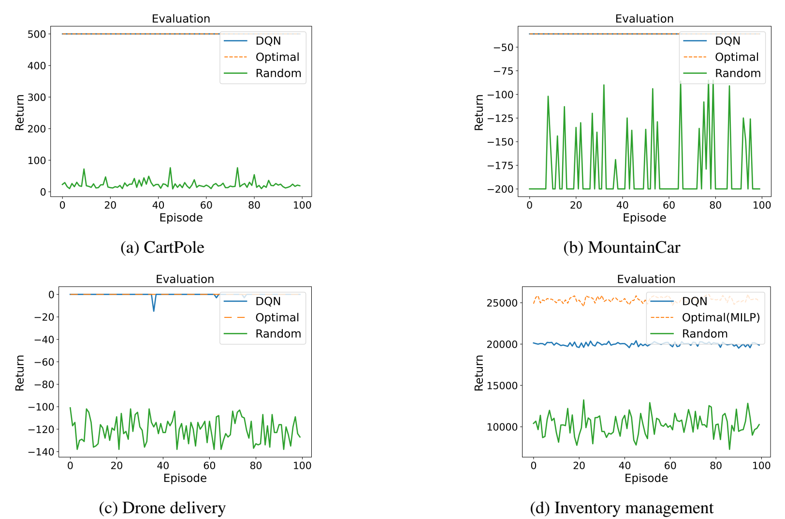
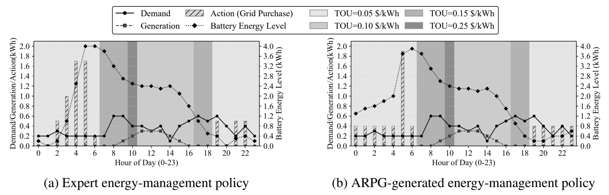
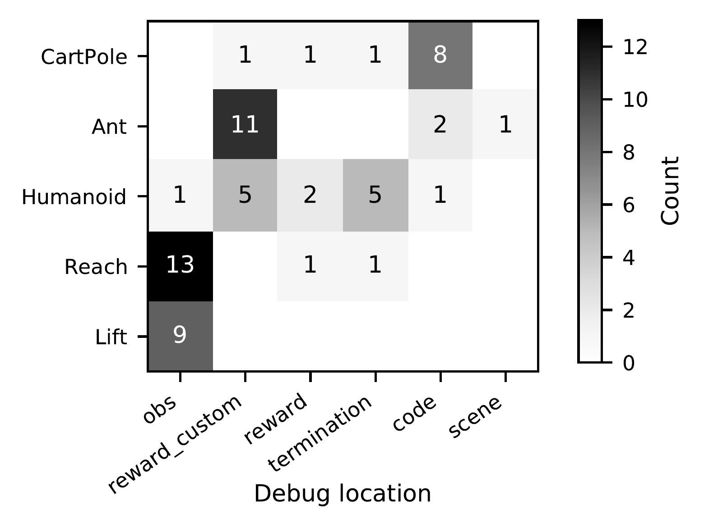

Isaac Lab / 0:52
ARPG vs. expert
Each task pairs a policy trained with Isaac Lab’s expert-designed pipeline with one trained using the ARPG-generated pipeline.
Open video file ↗NeurIPS 2026Sejong University
A Dependency-Aware Agentic Framework for Automated Robot Policy Generation

Isaac Lab / 0:52
Each task pairs a policy trained with Isaac Lab’s expert-designed pipeline with one trained using the ARPG-generated pipeline.
Open video file ↗Isaac Sim / 0:20
Changing the task description and robot configuration gives ARPG a new objective, from jumping in place to moving a cube between two tables.
Open video file ↗Method
ARPG first defines the objective, states, actions, rewards, and constraints of a Markov decision process. Agents check intermediate decisions and repair inconsistencies before separate coding agents build the simulator components used to train the policy.

ARPG logbookSupplement A–B
Read the original task inputs and ARPG’s complete modeling records. Select a task, then a part of its formulation.
A robot with an attached pole is placed on a cart that can move left and right. There’s a joint between the cart and the pole, but it’s a structure that rotates freely. We can apply force only to the cart. The cart is initialized within ±0.5 meters from the center, and the pole angle is initialized within ±0.05 radians. Both the cart and the pole start with zero velocity. The cart can move up to 3 meters to the left or right, and the pole is considered fallen if it tilts more than 0.5 radians in either direction The goal is to determine how to move the cart so that the pole remains upright for as long as possible.
Description: The minimal Markov state describing the cart–pole system at a given timestep, consisting of the cart position and velocity along the slider, and the pole angle (about upright) and angular velocity at the hinge.
Variables:
CartPosition
CartVelocity
PoleAngle
PoleAngularVelocity
Shape:
Description: A continuous control input specifying the horizontal force applied to the cart actuator.
Variables:
CartForceCommand
Type: Continuous.
Shape: .
Bounds:
Description: Alive bonus that returns a reward of 1 at each timestep while both the cart position and pole angle remain within their allowed limits, and 0 otherwise.
Formula:
Components:
: Reward at time .
: Cart position along the track at time (meters).
: Maximum allowed absolute cart position (meters).
: Pole angle from upright at time (radians).
: Maximum allowed absolute pole angle from upright (radians).
: Indicator function equal to 1 if the condition holds, 0 otherwise.
Objective: Maximize the expected cumulative survival time of the system by learning a policy that keeps the cart and pole within their valid operating limits: The objective rewards each timestep in which both the cart position and pole angle remain within their respective safety thresholds.
Initial State Constraints:
.
.
.
.
State Safety Constraints:
.
.
Velocity Constraints:
.
.
.
.
Actuation Constraint:
.
CartInitPosAbsMax: Maximum absolute initial cart displacement from the center (meters) (float).
PoleInitAngleAbsMax: Maximum absolute initial pole angle from upright (radians) (float).
CartInitVelocity: Initial linear velocity of the cart (m/s) (float).
PoleInitAngularVelocity: Initial angular velocity of the pole (rad/s) (float).
CartPositionLimitAbsMax: Maximum absolute allowed cart displacement before termination (meters) (float).
FailureAngleAbsMax: Maximum absolute allowed pole angle before termination (radians) (float).
RootInitPos: Initial world position of the articulation root in meters (array of size 3, float).
SliderToCartInitPos: Initial position of the prismatic joint slider_to_cart (meters) (float).
CartToPoleInitPos: Initial angle of the revolute joint cart_to_pole (radians) (float).
RigidBodyEnabled: Whether rigid body simulation is enabled (binary).
EnableGyroscopicForces: Whether gyroscopic forces are enabled (binary).
EnabledSelfCollisions: Whether self-collisions are enabled for the articulation (binary).
MaxLinearVelocity: Maximum linear velocity of rigid bodies (m/s) (float).
MaxAngularVelocity: Maximum angular velocity of rigid bodies (rad/s) (float).
MaxDepenetrationVelocity: Maximum depenetration velocity for contact resolution (m/s) (float).
SolverPositionIterationCount: Number of solver position iterations (int).
SolverVelocityIterationCount: Number of solver velocity iterations (int).
SleepThreshold: Linear/angular velocity threshold below which bodies can go to sleep (float).
StabilizationThreshold: Threshold for articulation stabilization (float).
CartEffortLimit: Effort limit of the cart prismatic joint actuator (N) (float).
CartVelocityLimit: Velocity limit of the cart prismatic joint (m/s) (float).
CartStiffness: Spring stiffness of the cart prismatic actuator (float).
CartDamping: Damping of the cart prismatic actuator (float).
PoleEffortLimit: Effort limit of the pole revolute joint actuator (Nm) (float).
PoleVelocityLimit: Velocity limit of the pole revolute joint (rad/s) (float).
PoleStiffness: Spring stiffness of the pole revolute actuator (float).
PoleDamping: Damping of the pole revolute actuator (float).
NumJoints: Total number of articulated joints in the robot (int).
NumActuators: Total number of actuators defined for the robot (int).
CartPosition: Cart displacement along the track, corresponding to the prismatic joint slider_to_cart position (meters).
CartVelocity: Cart linear velocity along the track, corresponding to the prismatic joint slider_to_cart velocity (m/s).
PoleAngle: Pole angle relative to the upright configuration, corresponding to the revolute joint cart_to_pole position (radians), where indicates the upright pose.
PoleAngularVelocity: Angular velocity of the pole about the hinge, corresponding to the revolute joint cart_to_pole velocity (rad/s).
CartForceCommand: Control variable representing the horizontal force applied by the cart actuator; the value is saturated by CartEffortLimit.
The ant robot operates in a physics-based simulation with a fixed integration time step of 1/120 seconds. Control commands are applied through joint-level effort inputs at a lower effective frequency due to action decimation, resulting in a control interval of approximately 0.0167 seconds. Each episode spans a finite horizon of 16 seconds and terminates either when the time limit is reached or when the robot’s base height falls below a minimum threshold (0.31 m), which indicates a loss of stable contact with the ground.
At each time step, the ant selects continuous control commands that actuate its leg joints, causing the articulated body to evolve under gravity, contact forces, and actuation limits. The task is defined relative to a fixed global reference direction: forward motion corresponds to movement along the positive X-axis, which can equivalently be interpreted as making progress toward a distant reference point placed far ahead in the scene. Consistent advancement in this direction reflects effective coordination among the legs and successful locomotion behavior.
While moving forward is essential, it is not sufficient on its own. The ant is implicitly encouraged to maintain a stable body orientation and continuous ground contact, as excessive tilting, rolling, or erratic leg motions tend to disrupt forward progress and lead to premature termination. In practice, effective policies discover gaits that balance propulsion with stability, keeping the body reasonably level while generating smooth, rhythmic leg movements.
The robot interacts with a flat ground surface configured with unit static and dynamic friction and zero restitution, providing consistent contact conditions across episodes. At the beginning of each episode, the initial state is randomized: the base pose and velocity are perturbed within bounded ranges, and joint positions and velocities are offset from their nominal configuration. As a result, the ant must repeatedly recover coordinated locomotion from a variety of nearby initial configurations rather than relying on a single fixed starting posture.
Actuation is applied uniformly across all joints with a moderate scaling factor, requiring the policy to learn how to distribute effort efficiently across the legs. Overly aggressive or abrupt commands may lead to unnecessary energy expenditure or unstable motions, whereas smoother and more coordinated actuation tends to support sustained forward travel.
Overall, the objective is to learn a control policy that enables the ant to move forward steadily along the positive X-axis, maintain sufficient body stability to avoid collapse, and coordinate its legs in a way that supports continuous and efficient locomotion over the duration of each episode.
Description: Proprioceptive and base state required to plan stable forward locomotion. The state additionally includes the previous action to preserve the Markov property when using action-smoothing penalties in the reward.
Variables:
JointPositions
JointVelocities
BaseOrientationQuat
BaseLinearVelocity
BaseAngularVelocity
BaseHeight
ForwardVelocity
FootContactStates
ElapsedTime
PrevJointEffortCommands
Shape:
Description: Continuous joint-level effort commands applied to the eight actuated joints. Actions are issued every ControlInterval and held constant between updates due to action decimation.
Variables:
JointEffortCommands:
Type: Continuous.
Shape: .
Range: typically implemented by scaling normalized policy outputs in to the actuator effort limits.
Description: Per-step forward progress along with penalties for tilt, angular motion, effort magnitude, effort changes (smoothness), and lateral drift. Reward is masked to zero after termination.
Reward (compact form):
Reward Components:
(forward progress).
(body tilt penalty).
(angular motion penalty).
(control effort penalty).
(action smoothness penalty).
(lateral drift penalty).
Symbol Definitions:
.
.
, .
are scalar weights.
is the indicator function (equals 1 if the condition holds, 0 otherwise).
Objective: Learn a locomotion policy that maximizes the expected cumulative reward over a finite horizon: where .
Reward Components:
(forward progress).
(penalty for body tilt).
(penalty for angular motion).
(control effort penalty).
(action smoothness penalty).
(lateral drift penalty).
Survival Condition:
is the base height at time .
is the minimum allowed base height.
Time Discretization and Horizon:
Time Evolution:
Termination Time:
State Definitions and Invariants:
Forward Displacement:
Action Holding (Decimation):
Joint and Actuation Limits:
Contact Constraints:
Initial Conditions:
PhysicsTimeStep: Fixed physics integration time step in seconds (e.g., s) (float).
ControlInterval: Effective control interval in seconds due to action decimation (approximately s) (float).
ActionDecimation: Number of physics steps per action application (int).
EpisodeHorizonSeconds: Maximum episode duration in seconds (float).
EpisodeHorizonSteps: Maximum episode duration in simulation steps (int).
TerminationMinBaseHeight: Minimum allowed base height before early termination (meters) (float).
GroundStaticFriction: Static friction coefficient of the ground plane (float).
GroundDynamicFriction: Dynamic friction coefficient of the ground plane (float).
GroundRestitution: Coefficient of restitution of the ground plane (float).
GravityDisabled: Whether gravity is disabled for the robot rigid bodies (binary).
MaxDepenetrationVelocity: Maximum depenetration velocity for contact resolution (float).
EnableGyroscopicForces: Whether gyroscopic forces are enabled (binary).
EnabledSelfCollisions: Whether self-collisions are enabled for the articulation (binary).
SolverPositionIterationCount: Number of solver position iterations for the articulation (int).
SolverVelocityIterationCount: Number of solver velocity iterations for the articulation (int).
SleepThreshold: Linear/angular velocity threshold below which bodies may go to sleep (float).
StabilizationThreshold: Threshold for solver stabilization (float).
CopyFromSource: Whether simulation properties are copied from the USD source (binary).
InitBasePos: Initial base position in meters (array of size 3, float).
InitLegJointsDefaultPos: Default initial joint position (radians) for all joints matching .*_leg (float).
InitFrontLeftFootPos: Initial joint position for front_left_foot (radians) (float).
InitFrontRightFootPos: Initial joint position for front_right_foot (radians) (float).
InitLeftBackFootPos: Initial joint position for left_back_foot (radians) (float).
InitRightBackFootPos: Initial joint position for right_back_foot (radians) (float).
ActuatorStiffness: Implicit actuator spring stiffness applied to all joints (float).
ActuatorDamping: Implicit actuator damping applied to all joints (float).
JointEffortCommands: Agent-selected continuous torque/effort commands applied to the eight actuated joints (front_left_leg, front_left_foot, front_right_leg, front_right_foot, left_back_leg, left_back_foot, right_back_leg, right_back_foot) at each control interval; commands are held constant between updates due to action decimation (shape ).
JointPositions: Current joint angles of the eight actuated joints (radians) (shape ).
JointVelocities: Current joint angular velocities of the eight actuated joints (rad/s) (shape ).
BasePosition: World-frame position of the free-floating base in meters (shape ).
BaseOrientationQuat: World-frame orientation of the base represented as a unit quaternion (shape ).
BaseLinearVelocity: World-frame linear velocity of the base (m/s) (shape ).
BaseAngularVelocity: World-frame angular velocity of the base (rad/s) (shape ).
FootContactStates: Binary indicators denoting ground contact for each foot link (front_left, front_right, left_back, right_back) (shape ).
FootContactForces: World-frame ground reaction forces applied at each foot link; forces are zero when the corresponding foot is not in contact (shape ).
BaseHeight: Current base height above the ground plane, corresponding to the -component of BasePosition (meters).
ForwardVelocity: Instantaneous base linear velocity along the axis in the world frame (m/s).
ForwardDisplacement: Cumulative displacement of the base along the axis measured from the start of the episode (meters).
ElapsedTime: Elapsed time since the beginning of the current episode (seconds).
The humanoid operates in a physics-based simulation with a fixed integration time step of 1/120 seconds. Control commands are applied at a lower frequency through action decimation, resulting in an effective control interval of approximately 0.0167 seconds. Each episode runs for a finite horizon of 16 seconds and terminates either upon reaching the time limit or when the humanoid’s base height drops below a minimum threshold (0.6 m), which corresponds to a loss of balance in the simulated environment.
Within each episode, the humanoid repeatedly selects joint-level control commands that determine how its articulated body evolves under gravity, contact forces, and actuation limits. The task is defined with respect to a fixed global reference direction: forward motion corresponds to movement along the positive X-axis, which can equivalently be interpreted as progression toward a distant reference location placed far ahead in the scene. In addition to advancing forward, the humanoid is expected to maintain an upright posture and a forward-facing orientation, avoiding excessive leaning, twisting, or lateral deviation while walking. Sustained advancement along the positive X-axis while remaining upright and aligned with the forward direction constitutes successful locomotion behavior.
As the simulation unfolds, the humanoid’s base position and orientation continuously change as a consequence of its chosen actions. Effective policies therefore require not only generating forward motion, but also actively stabilizing the torso and coordinating limb movements to keep the body facing forward and vertically aligned under gravity.
The robot interacts with a flat ground surface configured with unit static and dynamic friction and zero restitution, defining consistent contact conditions throughout training. Initial conditions are randomized at the beginning of each episode: the root pose and velocity are perturbed within bounded ranges, and joint positions and velocities are offset from their nominal configuration, introducing variability into the starting state distribution. As a result, the humanoid encounters a range of nearby initial configurations and must repeatedly recover stable, upright walking motion under slightly different conditions.
Actuation properties are non-uniform across the humanoid’s joints. Joints associated with the torso and pelvis operate with higher effective transmission ratios (on the order of 60–70), reflecting their role in supporting body weight and maintaining balance. Major leg joints exhibit a broader range of actuation strength, with certain thigh components configured at higher ratios (around 130) and others at moderate levels (around 45), while shin joints are assigned intermediate values (around 90). In contrast, foot joints operate under comparatively lower actuation scaling (around 20–25), allowing more compliant interaction with the ground. This heterogeneous actuation profile reflects the differing mechanical demands placed on various joints during forward, upright locomotion and shapes how balance and stability emerge over time.
So, yeah… this is just a humanoid in simulation and we want it to walk forward without falling over. When I say “forward,” I don’t mean it in a super strict, mathematical sense. Most of the time it’s along the world +X direction, but depending on how the scene is set up, it could also just mean “the direction the robot is generally moving or facing.” So I wouldn’t lock that down too hard.
An episode runs for some fixed amount of time — usually something like ten-ish seconds, maybe a bit more — but honestly the exact duration isn’t that important here and it has changed across different runs. Episodes also end when the robot is basically falling, but that’s not always decided by one clean number. Sometimes it’s about the base getting too low, other times it’s more of a general “this posture is clearly unstable now” kind of check. I don’t think there’s a single termination rule that applies everywhere.
What we care about is that the motion looks like reasonable walking. But what “reasonable” means isn’t fully pinned down yet. In some experiments we cared more about moving faster, in others we mostly cared about not wobbling or collapsing, and sometimes energy use or how smooth the motion looks mattered more. There’s definitely a trade-off there, and we haven’t fixed the priorities in advance. The idea was to adjust that later once we saw how training behaved.
The policy sends joint-level commands, but the exact interpretation of those commands depends on the actuator setup. In some cases it behaves more like sending target joint positions, in other cases it’s closer to effort or drive-style commands. So I wouldn’t assume a single, fixed action type or scale here — that really depends on how the actuators are configured for a given run.
As for observations, the policy gets the robot’s pose and joint-related information, but not necessarily everything you might want. Sometimes velocities are given directly, sometimes they’re inferred indirectly, and things like foot contact or heading information may or may not be present. There could also be some noise or delay in the signals, but the exact details weren’t always consistent across experiments.
The ground is flat, but physical properties like friction or damping weren’t always locked to one exact value. They were usually around the standard settings, but small variations or randomization may have been applied. Initial conditions are randomized too, though exactly which variables are randomized and by how much is something that changed between runs.
Overall, the goal is just to get the humanoid to keep moving forward in a way that doesn’t obviously fall apart. The precise definition of the objective, the termination conditions, and even the exact observation and action structure were intentionally left flexible and refined later during training.
Description: Proprioceptive and base-centric kinematic state required to generate and stabilize forward, upright locomotion at each 60 Hz control step.
State Vector:
Shape: .
Symbol Definitions:
: Joint positions.
: Joint velocities.
: Base linear velocity (world frame).
: Base angular velocity (world frame).
: Heading error relative to the global axis.
: Upright cosine (alignment with the world axis).
: Forward velocity along global .
: Lateral position along global .
: Lateral velocity along global .
: Base height above the ground.
: Left and right foot contact indicators.
Description: Continuous joint-level command targets applied at 60 Hz via action decimation. Actions are held constant over two physics steps and mapped to torques through an implicit spring–damper actuator model.
Action Vector:
Shape: .
Bounds: Each dimension is clipped to and scaled to joint-specific target ranges prior to application.
Symbol Definitions:
: Normalized actuator command targets.
: Number of actuated degrees of freedom.
Action decimation: Each is held constant for two physics steps.
Description: At each control step, the reward encourages forward velocity while penalizing heading misalignment, non-upright posture, lateral deviation, and falling.
Reward (compact form):
Reward Components:
.
.
.
.
.
.
Symbol Definitions:
: Forward velocity along global .
: Yaw-angle error relative to global forward direction.
: Cosine of angle between torso up axis and world .
: Lateral displacement along global .
: Lateral velocity along global .
: Torso height above the ground.
: Minimum base height threshold (e.g., m).
: Indicator function (1 if condition holds, 0 otherwise).
Objective: Learn a locomotion policy that maximizes forward progress while maintaining heading alignment, upright posture, lateral stability, and avoiding falls over a finite control horizon: where .
Reward Components:
(forward progress reward).
(heading misalignment penalty).
(uprightness penalty).
(lateral position deviation penalty).
(lateral velocity penalty).
(fall penalty).
Symbol Definitions:
: Forward velocity along the global axis.
: Signed yaw-angle error relative to the global forward direction.
: Cosine of the angle between the torso up axis and the world axis.
: Lateral displacement along the global axis.
: Lateral velocity along the global axis.
: Torso height above the ground.
: Minimum base height threshold triggering termination.
: Indicator function equal to 1 if the condition holds, and 0 otherwise.
Timing and Horizon:
Episode Time and Termination:
Base State and Orientation:
Heading and Uprightness:
Derived Velocities:
Action Decimation:
Joint Actuation (PD Law):
Actuator Parameter Assignment:
Contact and Friction:
Simulation and Control Timing:
SimDt: Physics integration time step (seconds, e.g., s) (float).
SimFrequencyHz: Physics simulation frequency (Hz) (int).
ControlInterval: Time between applied control commands due to action decimation (seconds) (float).
ControlFrequencyHz: Effective control command frequency (Hz) (int).
ActionDecimation: Number of physics steps per control action (int).
Episode Horizon and Termination:
EpisodeDurationSec: Maximum episode duration (seconds) (float).
EpisodePhysicsSteps: Maximum number of physics steps per episode (int).
EpisodeControlSteps: Maximum number of control steps per episode (int).
TerminationBaseHeightMin: Minimum humanoid base height before termination (meters) (float).
Environment and Ground Properties:
ForwardAxisVector: Global forward motion direction unit vector (shape , float).
GroundStaticFriction: Static friction coefficient of the ground (float).
GroundDynamicFriction: Dynamic friction coefficient of the ground (float).
GroundRestitution: Coefficient of restitution for the ground (float).
Initialization Parameters:
InitBasePosition: Initial base position in meters (shape , float).
InitAllJointPosValue: Initial joint position applied uniformly to all joints (radians) (float).
Physics Engine Settings:
MaxDepenetrationVelocity: Maximum depenetration velocity for rigid bodies (float).
GyroscopicForcesEnabled: Whether gyroscopic forces are enabled (binary).
SelfCollisionsEnabled: Whether self-collisions are enabled for the articulation (binary).
SolverPositionIterationCount: Number of position solver iterations (int).
SolverVelocityIterationCount: Number of velocity solver iterations (int).
SleepThreshold: Linear/angular velocity threshold below which bodies may go to sleep (float).
StabilizationThreshold: Stabilization threshold for the articulation root (float).
CopyFromSource: Whether simulation settings are copied from the USD source (binary).
Humanoid Structure:
NumberOfLinks: Total number of links in the humanoid (int).
Actuator Stiffness and Damping:
StiffnessWaist, DampingWaist: Waist joint stiffness and damping (float).
StiffnessPelvis, DampingPelvis: Pelvis joint stiffness and damping (float).
StiffnessUpperArm, DampingUpperArm: Upper arm joint stiffness and damping (float).
StiffnessLowerArm, DampingLowerArm: Lower arm joint stiffness and damping (float).
StiffnessThigh0, DampingThigh0: Thigh joint axis 0 stiffness and damping (float).
StiffnessThigh1, DampingThigh1: Thigh joint axis 1 stiffness and damping (float).
StiffnessThigh2, DampingThigh2: Thigh joint axis 2 stiffness and damping (float).
StiffnessShin, DampingShin: Shin joint stiffness and damping (float).
StiffnessFoot, DampingFoot: Foot joint stiffness and damping (float).
Transmission Parameters:
TorsoPelvisTransmissionRange: Effective transmission ratio range for torso and pelvis joints (shape , float).
ThighHighTransmissionNominal: Nominal transmission ratio for high-strength thigh components (float).
ThighModerateTransmissionNominal: Nominal transmission ratio for moderate thigh components (float).
ShinTransmissionNominal: Nominal transmission ratio for shin joints (float).
FootTransmissionRange: Transmission ratio range for foot joints (shape , float).
JointPositions: Current joint angles/positions for all actuated degrees of freedom of the humanoid (shape ).
JointVelocities: Current joint angular velocities for all actuated degrees of freedom (shape ).
ActuatorCommandTargets: Agent-selected joint-level command targets (e.g., PD target positions or equivalent setpoints) issued at approximately 60 Hz and held constant over ActionDecimation physics steps (shape ).
AppliedJointTorques: Resulting joint torques applied by the spring–damper actuators based on deviations from the command targets (shape ).
BasePositionWorld: World-frame position of the torso (root) link; forward progress corresponds to the component (shape ).
BaseOrientationQuatWorld: World-frame orientation of the torso (root) represented as a unit quaternion (shape ).
BaseLinearVelocityWorld: World-frame linear velocity of the torso (root); forward speed corresponds to the component (shape ).
BaseAngularVelocityWorld: World-frame angular velocity of the torso (root) (shape ).
BaseHeightZ: Torso height above the ground, defined as the component of BasePositionWorld; falling occurs if this value drops below a predefined threshold (shape , scalar).
BaseForwardDirWorld: Unit vector representing the torso’s forward axis expressed in world coordinates, used to assess alignment with the global direction (shape ).
HeadingErrorRad: Signed yaw-angle error between the torso’s projected forward direction and the global axis; zero indicates perfect forward alignment (shape , scalar).
UprightCosine: Cosine of the angle between the torso’s up axis and the world axis; a value of 1 indicates a perfectly upright posture (shape , scalar).
ForwardVelocityX: Scalar forward velocity along the global axis, i.e., (shape , scalar).
LateralPositionY: Torso lateral displacement along the global axis, used to penalize lateral deviation (shape , scalar).
LateralVelocityY: Torso lateral velocity along the global axis, used to discourage side-to-side motion (shape , scalar).
LeftFootInContact: Binary indicator denoting whether the left foot is in contact with the ground at the current timestep (shape , scalar).
RightFootInContact: Binary indicator denoting whether the right foot is in contact with the ground at the current timestep (shape , scalar).
LeftFootContactForce: Resultant ground contact force acting on the left foot expressed in world coordinates (shape ).
RightFootContactForce: Resultant ground contact force acting on the right foot expressed in world coordinates (shape ).
EpisodeTimeSec: Elapsed simulation time since the beginning of the current episode, useful for time-based scheduling or curricula (shape , scalar).
This is a reach-style end-effector pose tracking task in a manager-based Isaac Lab environment.
The simulator runs with a physics timestep of 1/60 s and control decimation = 2 (effective control period 0.033 s). Each episode lasts exactly 12 seconds and terminates only by timeout.
At each control step, the policy outputs continuous commands for the 7 arm joints (the gripper remains fixed). The task is defined by a time-varying end-effector pose command (position + orientation) expressed in the robot base frame. The target pose is resampled every 4 seconds and held constant between resampling events.
Target positions are sampled within a bounded, reachable workspace above the table, roughly , , in the base frame. To avoid degenerate behaviors such as reaching under the table or colliding with the tabletop, the commanded targets are restricted to remain above the tabletop by a safety margin; the target z is always strictly above the table surface height (in the same base frame) by at least a small clearance, and targets are sampled such that they are feasible without requiring self-collision or contact with the table.
The commanded orientation is constrained to match a typical reaching convention: roll is fixed, pitch is kept within a limited range, and yaw is allowed to rotate freely. The goal is to minimize both position and orientation tracking error between the commanded end-effector pose and the actual end-effector pose over time, including immediately after each target change.
In addition to tracking accuracy, smooth and stable motion is preferred: large joint velocities and abrupt changes in control commands are undesirable because they tend to destabilize tracking near the target. At the start of each episode, joint positions are randomized within reasonable bounds (consistent with joint limits) so the policy must generalize across different initial configurations while still tracking targets safely above the table.
Description: Proprioceptive and task-related observation at each control step, combining robot joint states, commanded end-effector pose, pose-tracking errors, the previously applied action for smoothness reasoning, and elapsed episode time. All errors are computed in the robot base frame.
Variables:
JointPositions (): Joint positions of the robot (panda_joint1..7, panda_leftfinger, panda_rightfinger).
JointVelocities (): Joint velocities corresponding to all actuated joints.
CommandedEndEffectorPosition (): Target end-effector position in the robot base frame.
CommandedEndEffectorOrientationQuat (): Target end-effector orientation as a unit quaternion.
EndEffectorPositionError (): .
EndEffectorOrientationErrorAxisAngle (): Orientation tracking error expressed in axis–angle form.
PrevActionJointTargets (): ActionJointTargets applied at time ( at ).
EpisodeTimeSeconds (): Elapsed time since episode start.
Shape: .
Description: Continuous joint target setpoints applied to the robot’s implicit PD actuators at each control step. Targets are clamped to the USD joint position limits.
Variables:
Type: Continuous.
Shape: .
Description: Per-step negative quadratic tracking cost with velocity and action-smoothness regularization. The reward is scaled such that summing over the episode corresponds to the stated time-normalized objective.
Reward Formula: where and .
Velocity Regularization:
Symbol Definitions:
: reward at control step .
: end-effector position error.
: end-effector orientation error (axis–angle).
: joint velocity of joint at time .
: shoulder velocity limit ().
: forearm velocity limit ().
: hand velocity limit ().
, with .
Objective: Learn a reaching policy that minimizes the time-averaged tracking error and control-induced motion over a finite horizon: where , , and .
Reward Components:
End-effector position error:
End-effector orientation error:
Joint velocity regularization: where , , and denote shoulder, forearm, and hand joints, respectively.
Action smoothness penalty:
Normalization: The factor ensures that the objective approximates a time-normalized integral cost and is invariant to the control frequency.
Time and Indexing
Forward Kinematics and Tracking Errors
Let then
Joint Limits and Velocity Constraints
Action Constraints and Zero-Order Hold
Workspace and Collision Constraints
Initial Conditions
Simulation Timing
PhysicsDtSeconds: Fixed physics integration timestep (seconds).
StepsPerSecond: Number of physics steps per second ().
ControlActionDecimation: Number of physics steps between successive control actions.
ControlIntervalSeconds: Time interval between control updates ().
ControlFrequencyHz: Control update frequency ().
Episode Horizon
EpisodeHorizonSeconds: Maximum episode duration before time-limit termination.
EpisodePhysicsSteps: Total number of physics steps per episode ( / ).
ControlStepsPerEpisode: Total number of control steps per episode ( / ).
Physics and Solver Settings
GravityEnabled: Whether gravity is enabled in rigid body dynamics.
SelfCollisionsEnabled: Whether self-collisions are enabled for the articulation.
ContactSensorsActivated: Whether contact sensors are enabled on the robot.
MaxDepenetrationVelocity: Maximum depenetration velocity used by the physics solver.
SolverPositionIterationCount: Number of solver position iterations.
SolverVelocityIterationCount: Number of solver velocity iterations.
SoftJointPosLimitFactor: Scaling factor applied to soft joint position limits.
Robot Structure
NumLinks: Number of links in the robot kinematic chain.
NumArmJoints: Number of revolute joints in the 7-DoF arm.
NumFingerJoints: Number of prismatic joints in the gripper.
NumTotalJoints: Total number of actuated joints (arm + gripper).
ActionDimension: Dimension of the continuous joint-level action vector.
Initial Joint Configuration
JointInitPosArm: Initial joint positions for the 7-DoF arm (panda_joint1–panda_joint7).
JointInitPosFingers: Initial joint positions for the gripper fingers (panda_leftfinger, panda_rightfinger).
Actuator Groups and Limits
Shoulder actuator group (panda_joint1–panda_joint4):
ShoulderJointCount
ShoulderEffortLimit
ShoulderVelocityLimit
ShoulderStiffness
ShoulderDamping
Forearm actuator group (panda_joint5–panda_joint7):
ForearmJointCount
ForearmEffortLimit
ForearmVelocityLimit
ForearmStiffness
ForearmDamping
Hand actuator group (gripper fingers):
HandJointCount
HandEffortLimit
HandVelocityLimit
HandStiffness
HandDamping
Action Variables
ActionJointTargets (): Continuous joint-level command targets applied at each control step, including 7 revolute arm joints and 2 prismatic finger joints.
Proprioceptive State
JointPositions (): Current joint positions (radians for arm joints, meters for finger joints).
JointVelocities (): Current joint angular or linear velocities for all actuated joints.
End-Effector State
ActualEndEffectorPosition (): Cartesian position of the end effector (panda_hand) expressed in the robot base frame.
ActualEndEffectorOrientationQuat (): Unit quaternion representing the current end-effector orientation in the robot base frame.
Commanded Targets
CommandedEndEffectorPosition (): Target Cartesian position for the end effector in the robot base frame, resampled within workspace bounds above the table.
CommandedEndEffectorOrientationQuat (): Target end-effector orientation represented as a unit quaternion in the robot base frame.
Tracking Errors
EndEffectorPositionError (): Position tracking error defined as .
EndEffectorOrientationErrorAxisAngle (): Orientation tracking error between commanded and actual end-effector orientations, expressed in axis–angle form (rotation axis scaled by rotation angle).
Temporal and Smoothness Signals
ActionChange (): Difference between the current and previous action vectors, used to penalize rapid changes in control inputs and encourage smooth control.
EpisodeTimeSeconds (): Elapsed simulation time since episode start, capped at the episode horizon (e.g., 12 s).
ControlStepIndex (): Index of the current control step within the episode, .
The task is set in a fixed-base manipulation environment built with Isaac Lab (v2.1) on top of Isaac Sim (v4.5). A Franka Emika Panda robotic arm with a parallel gripper is loaded from the standard USD asset and operates on a tabletop scene.
The simulation evolves at a physics integration rate of 100 Hz, with control commands applied every other physics step, resulting in an effective control frequency of 50 Hz. Each episode lasts for approximately five seconds of simulated time and terminates either when this time limit is reached or when the manipulated object falls below a height of about m, which is treated as a loss of control.
At the beginning of each episode, a small rigid object is placed on the table roughly half a meter in front of the robot. Its initial horizontal position is randomized within a limited range, introducing variation in the relative geometry, while its initial vertical position is fixed at the table height.
Throughout an episode, pose commands are sampled within a bounded workspace above the table, with target positions typically lying between about 0.4 and 0.6 meters in front of the robot, within ±0.25 meters laterally, and between roughly 0.25 and 0.5 meters in height. These commands are expressed relative to the robot base and remain constant over the duration of an episode, serving as soft references for guiding motion rather than hard success constraints.
As the arm moves, the distance between the gripper and the object gradually decreases, eventually allowing contact to occur. Meaningful interaction emerges when the gripper approaches the object, establishes control through grasping, and lifts it above approximately 0.04 m. Once lifted, the object can be transported within the workspace while remaining stably coupled to the arm.
The robot itself consists of a seven-degree-of-freedom arm and a two-finger parallel gripper. Successful behavior involves positioning the object between the gripper fingers, closing the gripper to achieve a stable grasp, maintaining that grasp without excessive motion, and lifting the object in a smooth and controlled manner.
At each control step, the agent observes the robot’s joint positions and velocities, the object’s position relative to the robot, the currently commanded target pose, and the most recent action. These signals are combined into a single observation vector used for decision making.
Because interaction unfolds continuously over time, effective strategies rely on sequences of moderate, coordinated actions rather than abrupt corrections. The learning process therefore favors smooth progress accumulated across successive steps, while discouraging excessive joint motion and rapid changes in control inputs.
The overall goal is to learn robust object manipulation behaviors under these physical, temporal, and geometric constraints using reinforcement learning, without explicitly hard-coding task stages or success conditions.
Description: Concatenated proprioceptive and task-relevant exteroceptive observations at each control step. The state includes all joint positions and velocities (arm and gripper), the object position relative to the robot base, the per-episode constant target position, and the most recent action. This representation provides sufficient information for smooth closed-loop manipulation and grasp stabilization.
Variables:
Shape: .
Symbol Definitions:
: Joint positions (7 arm joints + 2 gripper fingers).
: Joint velocities.
: Object position relative to the robot base.
: Per-episode constant target position.
: Action applied at the previous control step.
Description: Continuous joint-space target deltas applied at Hz via PD-controlled joints. Each action specifies a per-step change in joint targets (radians for arm joints and meters for the prismatic gripper fingers). The two gripper finger commands are constrained to be identical, enforcing symmetric gripper motion.
Variables:
Shape: .
Type: Continuous.
Symbol Definitions:
: Target increment for arm joint .
: Target increment for each gripper finger.
Action magnitudes are implicitly bounded by joint velocity limits and the control interval.
Description: A dense per-step reward that encourages moving the object toward the commanded target, lifting it above a height threshold, and executing smooth, low-velocity joint motions. Object drops are penalized, and once lifting is achieved, positive gripper openings are discouraged to promote stable grasping.
Objective:
Reward Components:
Position tracking:
Lift bonus:
Action smoothness:
Joint velocity penalty:
Drop penalty:
Gripper closure encouragement:
Symbol Definitions:
: Number of control steps per episode.
: Object height at time .
: Lift success height threshold.
: Drop (failure) height threshold.
(shoulder), (forearm), (gripper).
: Indicator function.
Objective: Learn a lifting policy that brings the object close to the commanded target, lifts it above a threshold height, maintains smooth control, respects joint velocity limits, and avoids dropping the object: where .
Reward Components:
Reaching term:
Lifting term:
Action smoothness penalty:
Joint velocity penalty:
Drop penalty:
Post-lift gripper closure penalty:
Symbol Definitions:
: Object position relative to the robot base.
: Commanded target position.
: Object height above the base frame.
: Height threshold indicating successful lift.
: Height threshold triggering drop penalty.
, : Current and previous control actions.
: Joint velocity of joint at time .
: Shoulder joint indices.
: Forearm joint indices.
: Gripper joint indices.
, , : Joint velocity limits for shoulder, forearm, and gripper joints.
: Indicator function equal to 1 if the condition holds, and 0 otherwise.
Target Pose Constraints:
Initial Configuration:
Gripper Symmetry:
Joint Position Limits:
Joint Velocity Limits:
Action Decimation and Timing:
Termination Conditions:
Index Sets:
Self-Collision Constraint:
Object Initialization:
Symbol Definitions:
: Commanded target position.
: Target workspace bounds.
: Joint positions and velocities.
: Action at control step .
, .
, , : Velocity limits for shoulder, forearm, and gripper joints.
: Action decimation factor.
, .
.
.
: Table height.
.
Simulation and Control Timing:
PhysicsHz: Physics integration frequency (Hz) (float).
PhysicsDtSec: Physics integration timestep (seconds) (float).
ControlHz: Control command application frequency (Hz) (float).
ControlIntervalSec: Time between control steps (seconds) (float).
ControlEveryNSteps: Number of physics steps between control updates (int).
Episode Horizon and Thresholds:
EpisodeTimeLimitSec: Episode time limit (seconds) (float).
PhysicsStepsPerEpisode: Physics steps per episode (int).
ControlStepsPerEpisode: Control steps per episode (int).
ObjectDropHeightThresholdM: Termination threshold on object height (meters) (float).
LiftHeightThresholdM: Approx. success threshold for lift height above table (meters) (float).
Commanded Target Pose Range (relative to robot base):
TargetXMinM, TargetXMaxM: Forward target range (meters) (float).
TargetYMinM, TargetYMaxM: Lateral target range (meters) (float).
TargetZMinM, TargetZMaxM: Vertical target range (meters) (float).
ObjectInitXApproxM: Approx. initial forward object distance (meters) (float).
Robot Kinematic Sizes:
NumArmJoints: Number of arm DOF (int).
NumFingerJoints: Number of gripper finger joints (int).
NumJointsTotal: Total controlled joints (arm + gripper) (int).
NumLinks: Total number of links (int).
ShoulderJointsCount: Shoulder group joint count (panda_joint1–4) (int).
ForearmJointsCount: Forearm group joint count (panda_joint5–7) (int).
FingerJointsCount: Gripper finger joint count (int).
Initialization:
ArmInitPosRad: Initial arm joint positions (radians) (shape , float).
FingerInitPosM: Initial finger joint positions (meters) (shape , float).
Actuation (PD) and Limits:
ShoulderStiffness, ShoulderDamping: PD gains for shoulder joints (float).
ShoulderEffortLimitNm, ShoulderVelocityLimitRadPerSec: Effort/velocity limits for shoulder joints (float).
ForearmStiffness, ForearmDamping: PD gains for forearm joints (float).
ForearmEffortLimitNm, ForearmVelocityLimitRadPerSec: Effort/velocity limits for forearm joints (float).
GripperStiffness, GripperDamping: PD gains for gripper finger joints (float).
GripperEffortLimit, GripperVelocityLimit: Effort/velocity limits for gripper fingers (float).
Simulation Options:
ActivateContactSensors: Whether contact sensors are activated (binary).
DisableGravity: Whether gravity is disabled for the robot (binary).
SelfCollisionsEnabled: Whether self-collisions are enabled (binary).
Physics Solver and Limits:
MaxDepenetrationVelocity: Maximum depenetration velocity (float).
SolverPositionIterationCount: Number of solver position iterations (int).
SolverVelocityIterationCount: Number of solver velocity iterations (int).
SoftJointPositionLimitFactor: Scaling factor for soft joint position limits (float).
Observation/Command Toggles:
ObservesJointPositions: Observation includes joint positions (binary).
ObservesJointVelocities: Observation includes joint velocities (binary).
ObservesObjectPoseRelToBase: Observation includes object pose relative to base (binary).
ObservesTargetPose: Observation includes commanded target pose (binary).
ObservesPreviousAction: Observation includes previous action (binary).
CommandPoseConstantPerEpisode: Commanded target pose constant within episode (binary).
Assigned Values (_values):
Timing:
Episode:
Thresholds:
Target Ranges:
Sizes:
Initialization:
PD Gains and Limits:
Options:
Solver:
Command:
JointPositions: Current positions of all controllable robot joints, consisting of 7 revolute arm joints and 2 prismatic gripper finger joints (shape ).
JointVelocities: Current velocities of all controllable robot joints, including the 7 arm revolute joints and 2 prismatic gripper finger joints (shape ).
ObjectPositionRelToBase: Three-dimensional position of the object’s reference frame expressed relative to the robot base frame (shape ).
TargetPosition: Commanded end-effector target position expressed relative to the robot base frame . The target remains constant within an episode but is observable by the agent (shape ).
Action: Control signal selected by the agent at the current control step for all controllable joints (arm + gripper). Depending on the controller, this corresponds to joint-space position targets or target deltas (shape ).
PreviousAction: Action applied at the previous control step for all controllable joints (arm + gripper), included to preserve the Markov property when action-smoothing or implicit actuator dynamics are used (shape ).
Appendix G
These experiments reuse the MDP modeling pipeline with a single coding agent for lightweight environments. Select a figure to inspect the original plots.

Fig. 5 / Appendix G.3
CartPole and MountainCar test classic control. Drone delivery introduces an energy budget, and inventory management introduces demand uncertainty. The plots compare each learned policy with optimal and random baselines.

Fig. 6 / Appendix G.4.1
The policy selects a user and transmit power at each time slot. It achieves rewards close to the expert DQN while meeting the required average data rate.

Fig. 7 / Appendix G.4.2
The policy shifts grid purchases and battery use as electricity prices change. Its annual cost was 148.72, within 0.90% of the expert policy’s 147.40 (Table 15).
Paper appendix
The Humanoid input leaves the heading convention, action scaling, and fall threshold open. Each system had ten trials to produce a successful MDP.
| System | Successes |
|---|---|
| ARPG (GPT-5.0) | 8 / 10 |
| Codex | 7 / 10 |
| Gemini-3 | 3 / 10 |
| GPT-5.2 | 0 / 10 |
| Claude | 0 / 10 |
A trial counted if its trained policy met the task’s policy-success criteria. Otherwise, a robotics and RL researcher, blinded to method and model identity, checked the realized state, action, reward, and overall formulation. Every applicable criterion had to pass. Appendix F.1
Across 50 Humanoid trials, the checker intervened at 60 of 350 modeling stages. The authors audited seven checklist decisions per intervention.
Of the 420 paired decisions, 130 violations were fixed, 74 persisted, 186 satisfied items stayed satisfied, and 30 new violations appeared. The audit covers stages where correction was triggered.
The logbook flags missing termination or success conditions and inconsistencies with earlier modeling stages. Supplement C.2 · SAR Agent Checklist
Observation construction drew 13 debugging calls for Reach and 9 for Lift. Ant’s largest count was in the custom reward, with 11 calls. The heatmap shows which simulator components were revisited for each task.
In one inspected Codex Ant formulation, the observation expressed base velocity in the robot’s frame, while the reward used forward speed along the world X-axis. Once the robot turned, the two could disagree. The formulation left the coordinate conversion unspecified. Appendix C.1

CitationNeurIPS 2026
If ARPG or its generated MDPs help your work, please cite the paper.
@inproceedings{jegal2026arpg,
title = {LLMs as MDP Designers: A Dependency-Aware Agentic Framework
for Automated Robot Policy Generation},
author = {Je-Gal, Hong and Kim, Jinwoo and Yi, Chan-Bin and Lee, Hyun-Suk},
booktitle = {Advances in Neural Information Processing Systems (NeurIPS)},
year = {2026},
eprint = {2611.04974},
archivePrefix = {arXiv}
}